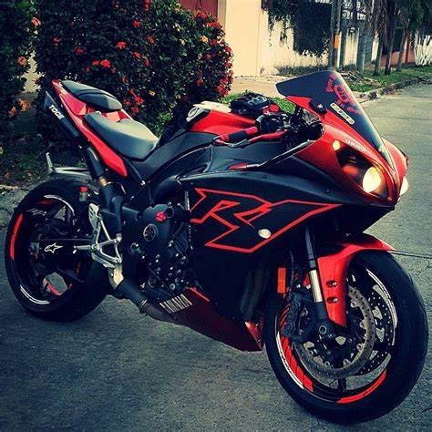
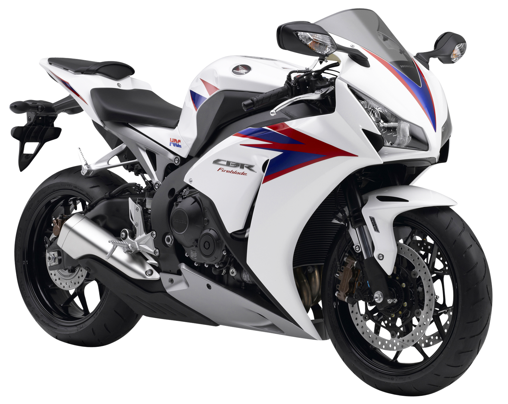

| Historia |
Creacion | Evolucion |
Origen Y Avances |
Curiosidades |
Datos |
Empresas |
Modelos |
Formulario |
Galeria |
Las motocicletas son vehículos de dos ruedas ideales para el transporte urbano, viajes largos o aventuras extremas. Existen muchas marcas reconocidas a nivel mundial.

